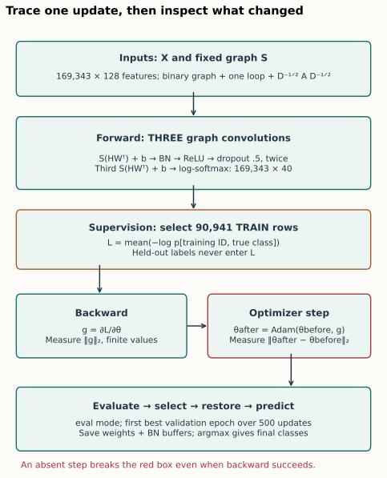
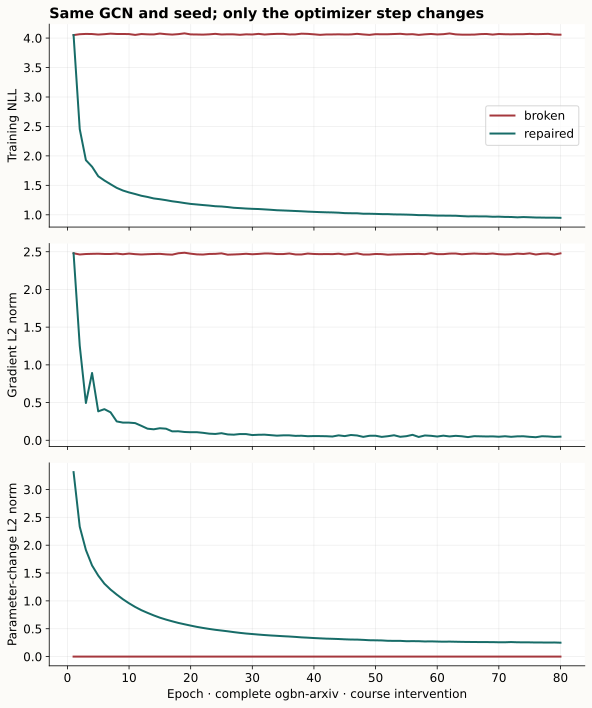
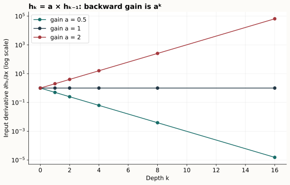
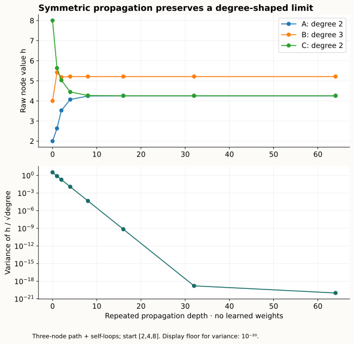
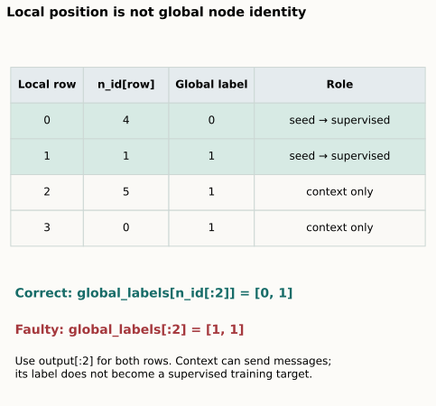
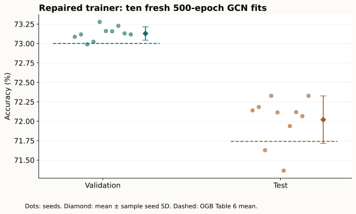

Year 3 · Quarter 4 · Lesson 116
Debug GNN training: make the failure falsifiable
Debugging unit · predict → probe → repair → verify
Your win: take a broken GNN training loop, identify a cause with a failing experiment, repair it, and defend the resulting curve without using test accuracy to choose the repair.
Start with the guided case in Sections 1–3 (about 20 minutes). Then work through the sampling and leakage tasks and run the small notebook (about 35 minutes). The complete author benchmark is separate from that study session.
Student notebook · Executed solution · Quick reference · Protocol and exact commands
1 · A symptom starts an investigation¶
Lesson 115 gave each module a responsibility. Here we ask whether those responsibilities are actually fulfilled during training. A tensor can have the right shape while its rows carry the wrong identities. A backward pass can produce gradients while the optimizer never changes a parameter. A high validation score can result from reading validation labels.
In plain terms. Diagnose by making competing explanations predict different observable outcomes. “The GNN does not learn” is too broad to test. “The loss has a finite gradient, but no parameter changes after one training step” is narrow enough to investigate.
Use this five-step discipline: reproduce, minimize, propose falsifiable hypotheses, change one cause, then keep a regression check. A regression check is an executable condition that fails when the old fault returns. You will write one that catches an absent optimizer step even if a later refactor rearranges the loop.
| Observed symptom | Competing causes | First separating probe | What would support the cause? |
|---|---|---|---|
| Training loss barely moves | No optimizer step; detached computation; tiny learning rate; contradictory labels | Record loss, gradient norm and parameter-change norm on one fixed batch | Finite nonzero gradient plus exactly zero update implicates the update path |
| Loss becomes non-finite | Excessive step size; invalid input; unstable operator or loss | Check finiteness before propagation, after each layer, after backward and after the step | The first failing boundary narrows where the invalid value originates |
| Early layers learn slowly | Repeated derivative contraction; saturated activation; detached branch | Record gradient norms per layer and compare a shorter chain | A reproducible depth-dependent contraction supports a gradient-flow hypothesis |
| Node vectors become hard to distinguish | Repeated smoothing; constant features; collapsed initialization | Hold weights fixed and measure degree-corrected representation spread as propagation depth changes | Convergence under repeated propagation isolates the smoothing mechanism |
| Training/validation gap widens | Overfitting; changed population; wrong IDs; evaluation mode | Audit row identities and split first; repeat evaluation with saved state | Clean boundaries are prerequisites before changing regularization |
| Validation looks implausibly good | Valid signal; label leakage; test-driven selection | Perturb held-out labels with inputs, split IDs and RNG fixed | A changed training loss or update proves unauthorized label dependence |
These rows are hypotheses, not a symptom-to-diagnosis lookup. Nonzero gradients do not prove useful learning. Similar embeddings do not by themselves prove that smoothing caused an accuracy loss. Lesson 114 already showed why aggregate accuracy can hide population differences.
Prediction. Your loss is finite, every parameter has a gradient, and the loss curve is flat. Rank: (a) no optimizer step, (b) detached loss, (c) over-smoothing. Name one measurement that would distinguish (a) from (b) before reading on.
Compare predictions
An absent step can leave nonzero gradients but no parameter change. A fully detached loss normally breaks backward or disconnects model gradients. Measure both gradient norm and parameter movement; neither an accuracy curve nor a shape check separates these cases reliably. Over-smoothing remains a separate hypothesis requiring representation evidence.
2 · Trace the actual GCN and its training state¶
We retain the GCN from Lesson 115. A node is one paper. Each paper has 128 numeric features and a label in one of 40 subject classes. The full graph has 169,343 nodes. The benchmark allows all node features and graph edges during message passing, while only the 90,941 training labels enter the loss. This is the released transductive setting: held-out nodes can provide unlabeled context. It is not a reconstruction of the graph as it existed at each historical date. OGB §4.3.

Forward. First build a binary undirected adjacency, deduplicate edges, and add exactly one self-loop per node. Let A denote this adjacency and dᵢ its row degree. The normalized coefficient from node j to receiver i is Sᵢⱼ=Aᵢⱼ/√(dᵢdⱼ). A graph convolution computes S(HWᵀ)+b: transform each node's coordinates, aggregate neighboring transformed rows, then add a bias. Two hidden blocks each apply graph convolution → batch normalization → ReLU → dropout with probability 0.5. A third graph convolution produces 40 class scores; log-softmax turns them into log probabilities. The dimensions are N×128 → N×256 → N×256 → N×40. Pinned complete model and loop.
Loss. If ℓᵢ,c is the log probability for class c at node i, mean negative log-likelihood is L=−Σᵢ∈T ℓᵢ,yᵢ / |T|. T is the set of authorized training IDs. Features from a validation node may influence this transductive forward computation; its target label may not influence this loss. A mask restricts supervision, not all message paths.
Backward and update. Backward calculates derivatives g=∂L/∂θ for trainable parameters θ. Calling backward does not itself change θ. The optimizer uses those derivatives and its own state to update the parameters. Adam also keeps moving averages; the norm of g does not equal the norm of the update.
Modes and buffers. model.train() enables dropout and updates batch-normalization running statistics. model.eval() disables dropout and uses saved statistics. torch.no_grad() controls gradient recording; it does not set evaluation mode. A checkpoint must include BN buffers as well as weights. These are different pieces of state. PyTorch evaluation/gradient modes.
Selection. Fit for 500 epochs; an epoch is one full-graph training update here. Evaluate each epoch. Select the first maximum validation accuracy and restore that state. The test labels are reserved for reporting after the selection rule is fixed. The pinned release computes per-epoch test accuracy too; our reproduction preserves that reporting but never uses it to select, stop, or tune.
3 · Repair a loop using a decisive measurement¶
Worked example. Suppose a two-coordinate parameter changes from [1,2] to [1,2]. The Euclidean parameter-change norm is √((1−1)²+(2−2)²)=0. If backward has just produced gradient [0.3,−0.4], its norm is √(0.3²+0.4²)=0.5. “Gradient present, update absent” is measurable.
The provided broken code is:
model.train()
optimizer.zero_grad()
loss = training_loss(model(x, adj), y, train_idx)
loss.backward()
return loss.detach()
Predict before revealing: which operation is missing? What should you measure immediately before and after it? Would inserting gradient clipping repair the omission?
Repair and explanation
Call optimizer.step() after backward. Snapshot parameter values before the call and compare afterward. Clipping only modifies gradients; it cannot execute an absent parameter update. Retain zeroing before the next backward so unrelated batches do not accumulate gradients. Deliberate gradient accumulation is a different, explicitly scaled protocol.
Task 1 — authorize labels. Implement training_loss(log_probs, labels, train_idx). The check changes held-out labels and verifies both unchanged loss and zero supervised gradient on held-out output rows. It does not demand zero gradient on held-out input features: message passing can use those features legitimately.
Task 2 — repair the update. Implement train_step(model, optimizer, x, adj, y, train_idx). Restore training mode, clear old gradients, use your Task 1 loss, run backward, step, and return the detached loss. The check compares two consecutive updates to a reference loop. Two steps are necessary to catch an omitted zero_grad() that a first-step-only check would miss. A separate GCN check preserves dropout RNG and verifies weights, gradients and BN buffers across three updates.

Read the evidence carefully. The 80-epoch real-data pair holds architecture, data, initialization seed 101, dropout schedule and optimizer configuration fixed. Only the missing step changes. Without a step, BN running buffers still evolve and dropout still changes training observations. Therefore a changing validation score does not prove that weights changed. The trace directly records parameter movement to avoid that false inference.
| Course arm | Initial loss | Epoch-80 loss | Parameter movement |
|---|---|---|---|
| broken | 4.050962 | 4.057399 | zero at every epoch |
| repaired | 4.050962 | 0.948045 | positive at every epoch |
The first loss and gradient norm match exactly between arms. Later states diverge because only one arm updates parameters. No test-score comparison selects this repair.
Scope check. These broken/repaired 80-epoch curves are course interventions. They are not 500-epoch paper reproductions. The separate ten-run experiment below tests the repaired trainer under the full released schedule.
4 · Separate gradient flow from representation smoothing¶
In plain terms. A gradient problem concerns how a small parameter change affects the loss. Over-smoothing concerns whether repeated graph propagation erases distinctions among node representations. They can coexist, but they are different measurements.
Worked gradient chain. Start with scalar h₀=x=1 and repeat hₖ=a·hₖ₋₁. With no nonlinearities, ∂hₖ/∂x=aᵏ. At depth 8, gain 0.5 gives derivative 1/256=0.00390625; gain 2 gives 256. This exact scalar example isolates multiplication of derivatives. A GNN replaces these scalars with matrices and activation derivatives, so this is a mechanism illustration, not a universal rate of decay.
Record per-layer gradient norms instead of just one total norm. Also record activation scales, finite values and parameter-update norms. If the first invalid values appear in input features, lowering the learning rate cannot fix their origin. If gradients are finite but enormous before the step, reducing step size or justified clipping is a candidate intervention to test. Clipping cannot repair wrong labels, broken indexing, or a detached computation. It changes the training procedure, so it would be a declared deviation from our unclipped OGB baseline.

Worked smoothing chain. Use the three-node path A—B—C, add self-loops, and start with scalar features [2,4,8]. Degrees are [2,3,2]. The coefficient on A→B is 1/√6≈0.4082; B's self coefficient is 1/3. Its next value is 2/√6+4/3+8/√6≈5.4158. Every receiver uses the previous state simultaneously.
With symmetric normalization, the stationary direction on a connected component is proportional to √d, not necessarily to an all-ones vector. Examine zᵢ=hᵢ/√dᵢ before concluding that unequal raw h values mean smoothing has stopped. Here the mean squared spread is V=(1/N)Σᵢ(zᵢ−z̄)². The fixed-operator experiment drives V toward zero while raw h values remain unequal because degrees differ. The limiting degree-corrected value is (Σᵢ√dᵢ·hᵢ)/(Σᵢdᵢ), about 3.0101 for this input. Li, Han and Wu: smoothing analysis.
Change one assumption. Remove B—C. C is now a separate connected component and can retain a distinct value. Switch to row-mean normalization: the operator and stationary representation change. Neither modification is evidence that an arbitrary trained deep GNN will improve. The widget has no learned weights, labels, nonlinearities, or optimizer.

A diagnosis of harmful over-smoothing needs both a representation mechanism and task evidence: for example, reduced class separation and a validation comparison at matched information boundaries. Shallow propagation or residual connections are hypotheses to test, not automatic cures. Revisit Lesson 085 for the foundational distinction.
5 · Debug the identity of a sampled row¶
Sampling creates local rows with new positions. A seed node is a requested prediction target. A context node is included to send messages. In PyG's NeighborLoader, n_id maps each local row back to its global node ID; the first batch_size rows are the input seeds. The caller must choose training seeds. Sampling context does not authorize its label for supervision. PyG neighbor-sampling tutorial.
Worked example. Let n_id=[4,1,5,0], batch_size=2, and global labels [1,1,1,0,0,1]. Local output rows 0 and 1 predict global nodes 4 and 1. Their labels are [0,1]. Using global_labels[:2] instead gives [1,1]. Shapes still agree, but the first target is wrong. The check also perturbs context labels so a coincidentally correct label pattern cannot conceal unauthorized label access.

Task 3 — seed-only loss. Implement seed_loss(log_probs, global_labels, n_id, batch_size). Restrict output rows to the seeds and gather labels through n_id. The executable fixture deliberately uses an indexing trap; context-label changes must leave the loss unchanged. Context output rows must have zero direct supervised gradient, while context input features can still affect seed predictions through messages.
Three separate checks prevent three separate sampling faults:
- Identity: decode a local row through
n_id. Comparing global labels to local positions is wrong even when shapes agree. - Supervision: use only authorized seeds in the loss. Including all sampled nodes changes the training distribution and may expose held-out labels.
- Computation: ensure sampled hops, edge directions and normalization match the intended estimator. Correct label indexing alone does not make a sampled GCN identical to the full-graph GCN. Lesson 113's scaling experiment keeps that distinction explicit.
The real PyG fixture samples all one-hop neighbors for two seeds and independently checks the convention. The small hand-worked graph makes the identity mapping visible. The paper reproduction remains full-batch and uses no neighbor sampler.
6 · Treat leakage as an information-flow bug¶
In plain terms. A training algorithm should not be able to tell you changed a label it is forbidden to read. This gives a stronger test than “validation looks too good.”
Fix inputs, graph, split IDs, initialization and random masks. Compute loss and gradients. Change validation/test labels only, then recompute. A difference proves that those labels influenced the tested path. No difference establishes only this path's invariance; it does not rule out leakage through preprocessing, feature engineering, checkpoint selection or a different code branch.
For sampled training, perturb context labels as well, because “included in this mini-batch” is not the same as “authorized target.” For the temporal RDL stack, labels must also have matured before fitting, and all features and edges must satisfy the event/availability contract from Lesson 109.
Worked counterexample. If loss uses every node label, changing labels outside the train split changes that loss. If loss uses only train IDs, it stays fixed. A train-only loss can still coexist with test-based checkpoint selection; audit selection separately. Our runner uses only validation accuracy for the first-best checkpoint. Changing test results cannot alter that index.
Stop rule. When a label-boundary check fails, stop interpreting accuracy. Repair the boundary, rerun from a fresh initialization, and report the contaminated result as invalid evidence. Do not present its higher score as an architectural improvement.
7 · Verify the repair on the complete named experiment¶
This unit has no new model paper. Its named target is the existing OGB v6 Table 6 GCN on ogbn-arxiv. The full visible implementation is shipped in the notebook and canonical source. The standalone runner exposes the complete schedule. The diagnostic trace adds observations without clipping, scheduling, changing the architecture or altering the loss.
Before results, predict. Which evidence is stronger for preservation: a close test score, or matched outputs/gradients/updates plus a protocol audit and independently replayed checkpoints? Explain what neither can establish about the original authors' historical random seeds.
The complete protocol has 169,343 nodes, 128 features, 40 classes and the official 90,941/29,799/48,603 train/validation/test split. Each of ten fresh seeds 0–9 trains for 500 epochs. Hidden width is 256; dropout is 0.5; Adam learning rate is 0.01. There is no early stopping. The first best validation epoch selects weights and BN state. Mean and sample seed standard deviation summarize accuracy over ten runs on this one fixed dataset; that SD is not uncertainty over new graphs or an estimate of the benefit of a repair.
Published reference means are validation 73.00% and test 71.74%. We declared absolute mean distance ≤0.5 percentage points as CLOSE before running. This is a descriptive tolerance, not a statistical equivalence test. Dataset, source commit, runtime versions, costs, unrun scope and exact commands appear in the protocol ledger.
Author-reference evidence: fresh training, separate from notebook execution.
| Population | Mean accuracy | Sample seed SD | Published mean | Verdict |
|---|---|---|---|---|
| valid | 73.1283% | 0.0860 pp | 73.00% | CLOSE |
| test | 72.0200% | 0.3056 pp | 71.74% | CLOSE |
All ten selected checkpoints were independently rescored and replayed through the original released model on all 169,343 nodes: 1,693,430 predictions, zero class mismatches. Source checks separately compare outputs, gradients and an optimizer update. The repaired loop preserves weights, gradients and BN buffers exactly against the same-runtime inline training order across three controlled updates.
The recorded worker-resource estimate for the pilot, ten fits and two diagnostic runs is USD0.2209. Startup/build/storage overhead is not itemized; it is covered by the reserve. Twenty bounded worker reservations cap compute at USD2.49552 and leave USD7.50448 within the USD10 aggregate plan. Thirteen workers were used; no retries.
Scope check. The complete selected executable experiment is COMPLETE. CLOSE does not establish historical random-state/environment identity or whole-paper parity; both remain NOT_ESTABLISHED. Live Colab and deployment remain NOT_CHECKED. Evidence summary.

8 · Lab and written defense¶
Open the student notebook. Its normal execution downloads no dataset and uses your three functions in the small controlled experiments. The complete model, data loader, trainer and gated ten-run command are visible inline; full training defaults to OFF. The executed solution contains author-reference results and its own local diagnostic outputs, clearly separated.
Submit: the three functions, your diagnostic report, a before/after loss curve and a five-part defense:
- State the failure and rank at least three hypotheses before choosing a repair.
- Give the smallest observation that separates your leading hypothesis from the alternatives.
- Explain why a nonzero gradient and a changing validation score do not prove parameters moved.
- Trace sampled local row 0 to its global ID and explain which labels may enter its loss.
- State exactly what the fresh benchmark reproduces and what remains unestablished.
Spacing. Tomorrow, reconstruct the update order without looking. In a week, rerun the same checks with permuted node IDs and a different label mask. Return to Lesson 114 and explain which errors would survive a purely numerical loss check.
Bridge to Lesson 117. A relational entity graph introduces more row types, joins, clocks and label-maturity rules. The same diagnosis loop survives: identify the prediction unit, enforce its information boundary, reproduce a failure, and verify one repair at a time. Ask the teacher follow-up questions or submit your evidence for feedback. Author execution is not learner mastery: PENDING_WRITTEN_DEFENSE.
Primary reading: the pinned OGB GCN training loop. Trace every line into the forward/backward/update/selection diagram. Then read Li et al. for smoothing and PyG's seed-node convention for sampling.